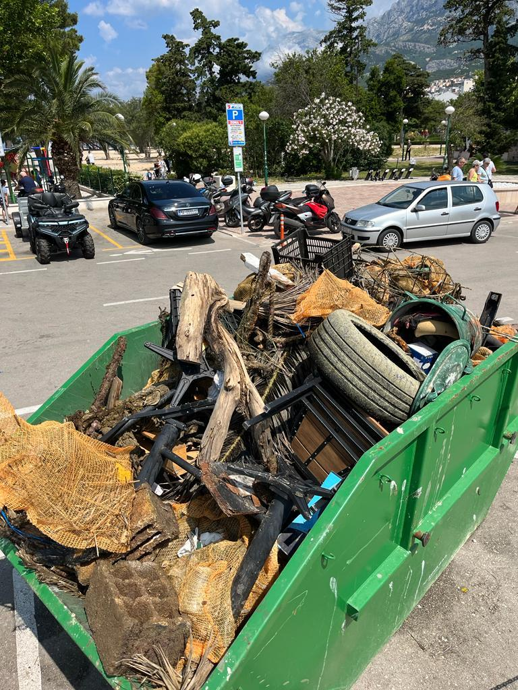

DIVING IN THE
ADIRATIC SEA
The Adriatic Sea is a stunning destination for divers from all over the world, with its crystal-clear waters, diverse marine life, and fascinating underwater landscapes. if you're looking for an exceptional diving experience in this region, look no further than More PADI Dive Resort.
As the oldest dive center in the area, we've been providing diving experiences since the early 1970s, with the diving experience starting with SSI and CMAS instructors. We upgraded to PADI in 2000, and since then, we've been offering courses and one-day programs that meet international PADI standards. We're proud to be the only 5 Star PADI Dive Resort in the region, and we've been providing divers with the possibility of accommodation since 2009.
Our friendly and experienced team of PADI diving instructors can be flexible with dive course duration and start dates to suit you. We have dive course materials available in 14 languages. We believe that diving education should be accessible to everyone, regardless of language barriers, and we're committed to making sure you have the best possible learning experience.
When you dive with us, you'll be diving in a safe and fun environment under the guidance of our experienced dive instructors, dive masters, and dive guides. We believe that diving should not only be safe but also provide an opportunity to appreciate and learn about the amazing underwater world. The Adriatic Sea is home to an incredible diversity of marine life, including colorful fish, octopuses, starfish, and sea anemones, as well as lobsters, crabs, and even seahorses. And with visibility of up to 30 meters, you'll be able to see it all in stunning detail.
In addition to our courses and one-day programs, we also offer special diving packages for those who want to explore more of what the Adriatic has to offer. These packages include multiple dives over several days. with the opportunity to discover a range of dive sites and explore different underwater landscapes.
At More Sub PADI Dive Resort, our mission is to provide exceptional diving experiences that are safe, fun, and educational. Whether you're a beginner or an experienced diver, our team will work with you to create a customized diving experience that exceeds your expectations. So what are you waiting for? Dive into the Adriatic Sea with us and discover a whole new world underwater!
As the oldest dive center in the area, we've been providing diving experiences since the early 1970s, with the diving experience starting with SSI and CMAS instructors. We upgraded to PADI in 2000, and since then, we've been offering courses and one-day programs that meet international PADI standards. We're proud to be the only 5 Star PADI Dive Resort in the region, and we've been providing divers with the possibility of accommodation since 2009.
Our friendly and experienced team of PADI diving instructors can be flexible with dive course duration and start dates to suit you. We have dive course materials available in 14 languages. We believe that diving education should be accessible to everyone, regardless of language barriers, and we're committed to making sure you have the best possible learning experience.
When you dive with us, you'll be diving in a safe and fun environment under the guidance of our experienced dive instructors, dive masters, and dive guides. We believe that diving should not only be safe but also provide an opportunity to appreciate and learn about the amazing underwater world. The Adriatic Sea is home to an incredible diversity of marine life, including colorful fish, octopuses, starfish, and sea anemones, as well as lobsters, crabs, and even seahorses. And with visibility of up to 30 meters, you'll be able to see it all in stunning detail.
In addition to our courses and one-day programs, we also offer special diving packages for those who want to explore more of what the Adriatic has to offer. These packages include multiple dives over several days. with the opportunity to discover a range of dive sites and explore different underwater landscapes.
At More Sub PADI Dive Resort, our mission is to provide exceptional diving experiences that are safe, fun, and educational. Whether you're a beginner or an experienced diver, our team will work with you to create a customized diving experience that exceeds your expectations. So what are you waiting for? Dive into the Adriatic Sea with us and discover a whole new world underwater!
WE ARE TAKING CARE OF THE ENVIROMENT!
Our diving school is proud to be at the forefront of promoting eco-friendliness and environmental sustainability in the world of scuba diving. We are committed to preserving and protecting the fragile underwater ecosystems we explore, ensuring that future generations can also experience the wonders of the ocean.
One of the key ways we prioritize sustainability is through responsible diving practices. Our instructors emphasize the importance of buoyancy control, ensuring that divers have minimal impact on delicate marine life and coral reefs. We educate our students about the fragility of these ecosystems, encouraging them to observe from a respectful distance and avoid touching or damaging any underwater organisms.
In addition, we actively participate in underwater clean-up initiatives, organizing regular dives dedicated to removing marine debris. Our team and students collaborate to collect trash from the ocean floor, helping to restore the natural beauty of the underwater world and protect marine creatures from harmful pollution.
One of the key ways we prioritize sustainability is through responsible diving practices. Our instructors emphasize the importance of buoyancy control, ensuring that divers have minimal impact on delicate marine life and coral reefs. We educate our students about the fragility of these ecosystems, encouraging them to observe from a respectful distance and avoid touching or damaging any underwater organisms.
In addition, we actively participate in underwater clean-up initiatives, organizing regular dives dedicated to removing marine debris. Our team and students collaborate to collect trash from the ocean floor, helping to restore the natural beauty of the underwater world and protect marine creatures from harmful pollution.

Featured Tours
40€
Snorkeling
Snorkeling is a great way to experience the underwater world without the added weight and complexity of scuba diving equipment. With just a mask and snorkel, you can observe a variety of sea creatures and appreciate the beauty of the Adriatic sea.

70€
Beach Dive
Beneath the stunning coastline of the Adriatic lies a world of unparalleled beauty waiting to be explored. For those with less experience in diving, guided beach dives are an excellent option.
100€
Day Trip
Experience the beauty of the Adriatic Sea with our half-day boat diving trips along the stunning Makarska Riviera. Whether you're a certified diver or a beginner, our guided boat dives are the perfect way to explore the diverse range of dive areas and the magnificent underwater world.